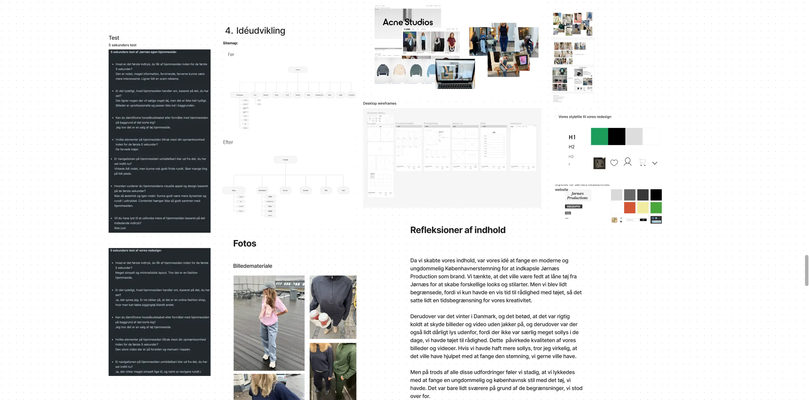
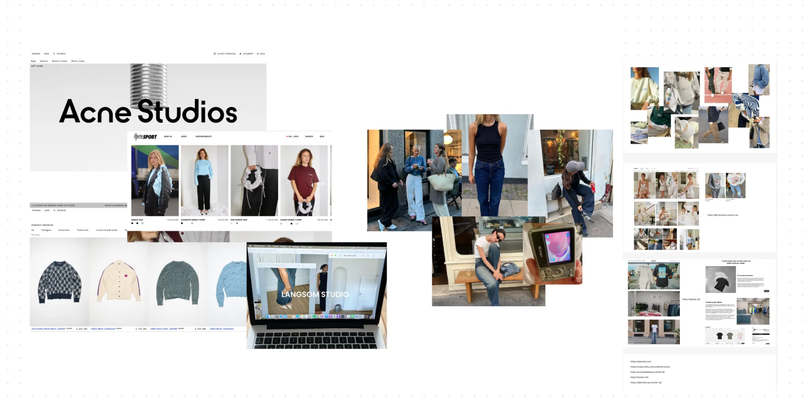
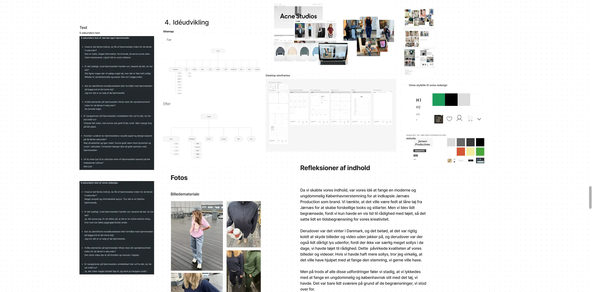
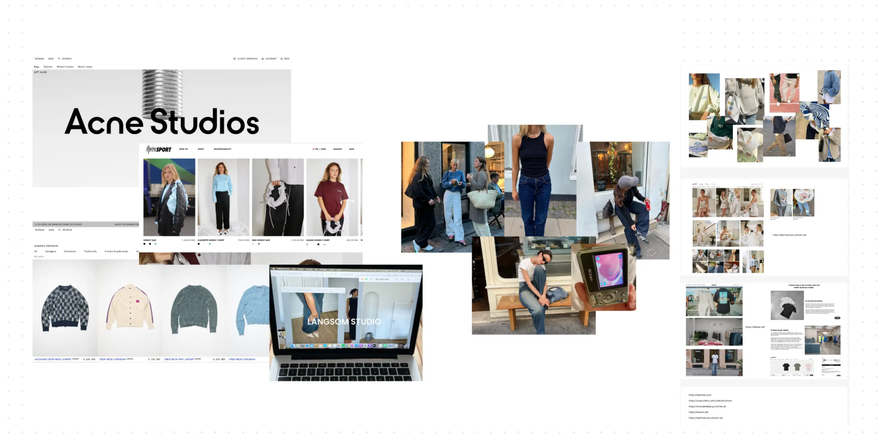

TEMA 5 - GRUNDLÆGGENDE INDHOLD
I tema 5, "Grundlæggende indhold", fik vi en forståelse for planlægning og håndtering af videoproduktioner og kendskab til mp4 fil format. Dette omfattede en gennemgang af alle trin: fra præproduktion, over selve optagelsesprocessen, til postproduktion. Vi blev også introduceret til fagbegreber inden for video- og fotoproduktion. Vi brugte Adobe Premiere Pro til at redigere vores videoer. Dette var et program, jeg allerede var fortrolig med, da jeg har redigeret videoer i mange år. Undervejs fik vi mulighed for at låne udstyr fra tech-lab, hvor vi specifikt fik erfaring med mikrofonbrug og håndtering af ekstern lyd.
Videosite
I forbindelse med videosite-opgaven blev vi opdelt i grupper på fire. Inden for disse grupper skulle vi parvis samarbejde om at finde en person med en passion. Målet var at udarbejde en 60 sekunders video baseret på et interview med denne person. Jeg fandt Mathilde, som har en stor passion for tegning.
Før jeg mødtes med Mathilde, havde jeg forberedt en række spørgsmål til interviewet. Denne forberedelse er afgørende, da det sikrer, at interviewet forbliver fokuseret og indholdsrigt, og at alle relevante informationer bliver dækket. Selvom vi ikke havde udviklet et storyboard på grund af tidsbegrænsninger i at finde en person, anvendte jeg 5-skudsreglen under optagelserne. Denne regel omhandler at filme fem forskellige typer af skud: et nærbillede af hænderne, et nærbillede af ansigtet, et vidvinkel-skud, et over-skulder-skud og et skud, der fanger handlingen. Anvendelsen af denne regel hjælper med at skabe en dynamisk og visuelt engagerende video.
Efter optagelserne var vi hver i sær ansvarlig for selv at redigere videoen og udvikle et videosite til at præsentere det færdige arbejde. I denne proces lærte jeg også, hvordan man embedder en video fra YouTube, hvilket tilføjede en ny dimension til min tekniske kunnen.
Virksomhedssite
I projektet 'Virksomhedssite' arbejdede jeg sammen med tre andre i en gruppe for at redesigne en virksomheds hjemmeside. Selvom det indledningsvis var en udfordring at finde en passende virksomhed, faldt vores valg på 'Jørnæs Production', en producent af prisvenligt joggingtøj. Vi valgte dem, fordi deres nuværende hjemmeside var rodet, svært at navigere i og ikke matchede deres målgruppe.
Før vores besøg hos virksomheden gennemførte vi grundig research på deres eksisterende hjemmeside og udførte tests, herunder en 5-sekunders test og en BERT-test. Dette gav os indsigt i hjemmesidens mangler og muligheder for forbedringer i vores redesign. Vores tests hjalp med at forstå brugeroplevelsen og identificere nøgleområder for optimering. Efterfølgende udarbejdede vi interviewspørgsmål og mødtes med virksomheden. De gav os værdifulde oplysninger om deres identitet, ønsker til et redesign og målgruppe. Disse indsigter var afgørende for at forme vores redesign med en mere informeret tilgang.
I idéudviklingsfasen arbejdede vi som gruppe på at skabe moodboards, styletiles, wireframes og værdiord. Da vi begyndte på design og kodning, fik jeg til opgave at producere en hero-video til hjemmesiden og at kode 'Om os' siden. Selvom hver af os fik ansvar for at kode en side, var vi alle involveret i designprocessen og testingen.
Vi fortsatte med at teste vores site, anvendte de samme tests som på Jørnæs' oprindelige hjemmeside for at sikre en kvalitativ sammenligning, og gennemførte en heuristisk evaluering for at identificere brugervenlighedsproblemer. Projektets største udfordring var brugen af GitHub. Vi anvendte Git til fælles kodning, men oplevede udfordringer med at slette hinandens arbejde og at arbejde i den forkerte gren. Denne erfaring har lært mig vigtigheden af opmærksomhed og koordination i teambaserede kodningsprojekter.
 


